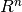
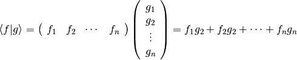
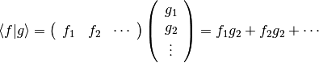
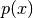
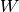
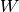
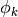
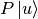

Linear Algebra¶
Scalar Product¶
Virtually all spaces used in physics are Hilbert spaces (treated in the weak sense, i.e. equipped with distributions), which means that they have a scalar product and a norm.
The braket in Dirac notation is a scalar product and we are free to define it anyway we like, as long as it satisfies the following properties:
where if, and only if, . Scalar product induces the norm:
Any norm has to satisfy the following properties:
where if, and only if, . Those properties are automatically satisfied by the induced norm.
In general, any of these properties can be weakened, one can study spaces that have a norm, but not a scalar product, or spaces, that have objects resembling a norm (or a scalar product), that only satisfy some of the properties of the norm (or a scalar product). Those are not very important in physics. On the other hand, it is very important to understand how to work with Hilbert spaces (in the weak sense). Dirac notation makes it very easy to understand and remember how to work with such spaces.
Examples¶
Some examples of frequently used spaces and scalar products follows.
Finite dimensional spaces:

 scalar product:

Infinite dimensional spaces:
scalar product:

Function spaces:
 scalar product:
scalar product:
 scalar product:
scalar product:
scalar product:
Energy scalar product:
All of these scalar products automatically satisfy all of the properties of the scalar product, only the energy scalar product doesn’t automatically satisfy , which imposes some conditions on the parameters  and .
Projections¶
Projection is a linear idempotent operator  :
:
It takes a vector from  and projects it onto a vector
and projects it onto a vector  from . Further application of the operator gains nothing:
.
It decomposes the space into a direct sum of
the projection subspace and its complement . If is
from then its complement is from . Given the
space , the operator is unique.
from . Further application of the operator gains nothing:
.
It decomposes the space into a direct sum of
the projection subspace and its complement . If is
from then its complement is from . Given the
space , the operator is unique.
Orthogonal projection is a projection that is Hermitean:
The complement of an orthogonal projection is orthogonal to any vector from :

In other words, orthogonal projection projects a vector
from the space into an orthogonal subspace (projection subspace)
.
If we choose any orthonormal basis , ,
, ..., of the subspace , then the orthogonal projection is:
because:
and
is independent of the basis, i.e , as long as span the same
subspace as , because the operator is unique.
To find the closest vector from to the vector from ,
we need to minimize the norm . So we write
for some vector from and simplify
the norm:
which is minimal for , so we found out that the closest vector is . We used the fact that , because is from the orthogonal complement to the subspace . In other words, orthogonal projection finds the closest vector from a subspace onto which it projects.
Nonorthogonal basis¶
In order to project using a nonorthogonal basis (for example a finite element basis), we write:

where  are the projection coefficients that we’d like to calculate. This holds, because  belongs to the space and every vector from it can be expressed as a linear combination of . Now we multiply by from the left and simplify:

so we need to solve the linear system:

with:

This works for any basis, it doesn’t have to be normalized nor orthogonal.
Examples¶
projection. Orthogonal basis:

Different basis orthogonal basis:

Lagrange interpolation projection onto the space :
projection onto the space . Orthogonal basis:
Different orthogonal basis:
Nonorthogonal basis:
![\ket{w_0} = 1
\ket{w_1} = 1 + x
A_{lk}\phi_k = f_l
A_{lk} = \left(\begin{array}{cc}
A_{00} & A_{01} \\
A_{10} & A_{11} \\
\end{array}\right)=
\left(\begin{array}{cc}
\braket{w_0|w_0} & \braket{w_0|w_1} \\
\braket{w_1|w_0} & \braket{w_1|w_1} \\
\end{array}\right)=
=
\left(\begin{array}{cc}
\int_{-1}^1 \d x & \int_{-1}^1 1+x \,\d x \\
\int_{-1}^1 1+x\,\d x & \int_{-1}^1 (1+x)^2 \,\d x \\
\end{array}\right)
=\left(\begin{array}{cc}
2 & 2 \\
2 & {8\over3} \\
\end{array}\right)
A_{kl}^{-1} =
\left(\begin{array}{cc}
2 & -{3\over2} \\
-{3\over2} & {3\over2} \\
\end{array}\right)
f_{l} = \left(\begin{array}{c}
f_0 \\
f_1 \\
\end{array}\right)=
\left(\begin{array}{c}
\braket{w_0|u} \\
\braket{w_1|u} \\
\end{array}\right)=
\left(\begin{array}{c}
\int_{-1}^1 f(x)\, \d x \\
\int_{-1}^1 (1+x)f(x)\,\d x \\
\end{array}\right)
\phi_k =
\left(\begin{array}{c}
\phi_0 \\
\phi_1 \\
\end{array}\right)=
A_{kl}^{-1} f_l =
\left(\begin{array}{cc}
2 & -{3\over2} \\
-{3\over2} & {3\over2} \\
\end{array}\right)
\left(\begin{array}{c}
\int_{-1}^1 f(x)\, \d x \\
\int_{-1}^1 (1+x)f(x)\,\d x \\
\end{array}\right)=
=
\left(\begin{array}{c}
2\int_{-1}^1 f(x) - {3\over2}(1+x)f(x)\d x \\
-{3\over2}\int_{-1}^1 f(x) + {3\over2}(1+x)f(x)\d x \\
\end{array}\right)=
P\ket{u} = \ket{w_0}\phi_0 + \ket{w_1}\phi_1 =
= 1 \left(2\int_{-1}^1 f(x) - {3\over2}(1+x)f(x)\d x\right)
+ (1+x)\left(-{3\over2}\int_{-1}^1 f(x) + {3\over2}(1+x)f(x)\d x\right)
=
= {1\over2}\int_{-1}^1 f(x) \d x + {3\over2}x \int_{-1}^1 x f(x) \d x](../../_images/math/89278c184e9079d497bfeaef0a27354e894d5408.png)
projection. Nonorthogonal basis:
![\ket{w_0} = 1
\ket{w_1} = 1 + x
A_{lk}\phi_k = f_l
A_{lk} = \left(\begin{array}{cc}
A_{00} & A_{01} \\
A_{10} & A_{11} \\
\end{array}\right)=
\left(\begin{array}{cc}
\braket{w_0|w_0} & \braket{w_0|w_1} \\
\braket{w_1|w_0} & \braket{w_1|w_1} \\
\end{array}\right)=
=
\left(\begin{array}{cc}
\int_{-1}^1 \d x & \int_{-1}^1 1+x \,\d x \\
\int_{-1}^1 1+x\,\d x & \int_{-1}^1 (1+x)^2 + 1 \,\d x \\
\end{array}\right)
=\left(\begin{array}{cc}
2 & 2 \\
2 & {14\over3} \\
\end{array}\right)
A_{kl}^{-1} =
\left(\begin{array}{cc}
{7\over8} & -{3\over8} \\
-{3\over8} & {3\over8} \\
\end{array}\right)
f_{l} = \left(\begin{array}{c}
f_0 \\
f_1 \\
\end{array}\right)=
\left(\begin{array}{c}
\braket{w_0|u} \\
\braket{w_1|u} \\
\end{array}\right)=
\left(\begin{array}{c}
\int_{-1}^1 f(x)\, \d x \\
\int_{-1}^1 (1+x)f(x) + f'(x)\,\d x \\
\end{array}\right)
\phi_k =
\left(\begin{array}{c}
\phi_0 \\
\phi_1 \\
\end{array}\right)=
A_{kl}^{-1} f_l =
\left(\begin{array}{cc}
{7\over8} & -{3\over8} \\
-{3\over8} & {3\over8} \\
\end{array}\right)
\left(\begin{array}{c}
\int_{-1}^1 f(x)\, \d x \\
\int_{-1}^1 (1+x)f(x) +f'(x)\,\d x \\
\end{array}\right)=
=
\left(\begin{array}{c}
\int_{-1}^1 {7\over8}f(x) - {3\over8}(1+x)f(x)- {3\over8}f'(x)\d x \\
\int_{-1}^1 -{3\over8}f(x) + {3\over8}(1+x)f(x)+ {3\over8}f'(x)\d x \\
\end{array}\right)=
P\ket{u} = \ket{w_0}\phi_0 + \ket{w_1}\phi_1 =
= 1 \left(\int_{-1}^1 {7\over8}f(x) - {3\over8}(1+x)f(x)- {3\over8}f'(x)\d x\right)
+ (1+x)\left(\int_{-1}^1 -{3\over8}f(x) + {3\over8}(1+x)f(x)+ {3\over8}f'(x)\d x\right)
=
= \int_{-1}^1 {1\over2}f(x)-{3\over8}f'(x) \d x
+ x \int_{-1}^1 {3\over8}x f(x)+{3\over8}f'(x) \d x=
= \int_{-1}^1 {1\over2}f(x) \d x + x \int_{-1}^1 {3\over8}x f(x) \d x
-{3\over8}(f(1)-f(-1)) + {3\over8}x(f(1)-f(-1))=
= {1\over2}\int_{-1}^1 f(x) \d x + {3\over8}x \int_{-1}^1 x f(x) \d x
+{3\over8}(-1+x)(f(1)-f(-1))](../../_images/math/fab936fa620d408ba0cdaf03b1a1fd4914b13451.png)